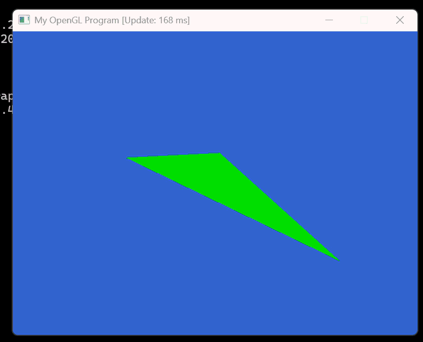
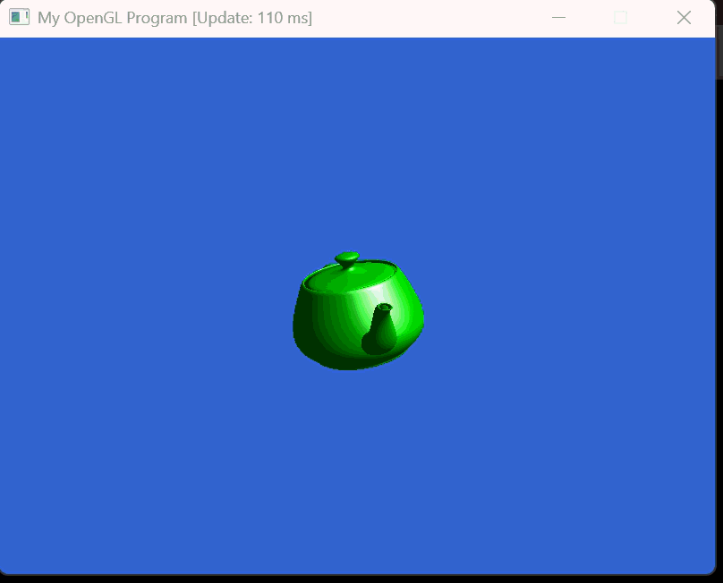

Part B: Modifications and Explanations
Q1: Depth Testing Removal
Removing glEnable(GL_DEPTH_TEST) breaks depth comparison completely.
OpenGL then draws triangles in the exact array order, causing faces that should be hidden
to appear in front. As the cube rotates, this creates flickering and a distorted shape
because visibility is not based on distance anymore.
Q2: Updating the Quit Condition (ESC + Q)
I updated the input handling so the program exits not only when ESC is pressed,
but also when the Q key is released. I added an extra condition to check for
SDL_SCANCODE_Q in the SDL key-up event. The GIF below demonstrates the updated controls.
(windowEvent.key.key == SDLK_ESCAPE ||
windowEvent.key.scancode == SDL_SCANCODE_Q)) {
quit = true;
}

Q3: Light Direction Modification
I changed the light direction in the fragment shader so the light shines upward from below.
Instead of pointing downward, I set the vector to something like vec3(0, 1, -1).
This flips which surfaces receive diffuse lighting and makes the cube appear illuminated from beneath.

Q4: Model Load – Triangle and Teapot
I created a large single-triangle model by hand and rendered it. I also loaded a teapot model to verify the ModelLoad system works with additional OBJ-like formats. Both outputs are shown below.
 